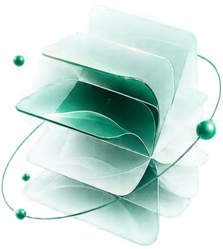
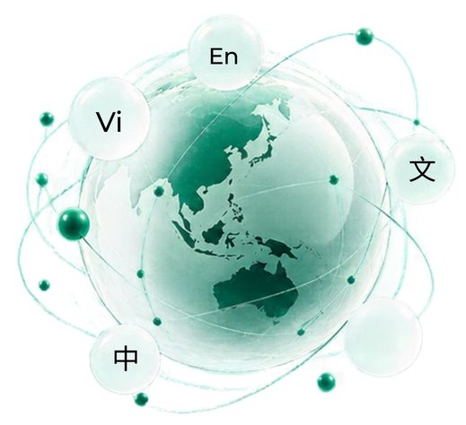
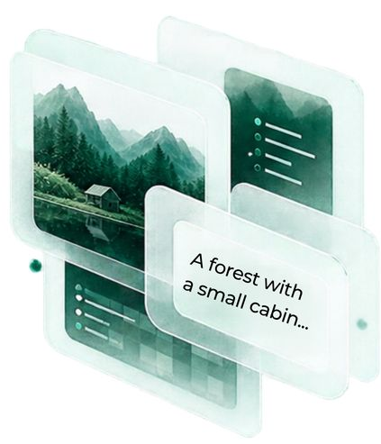
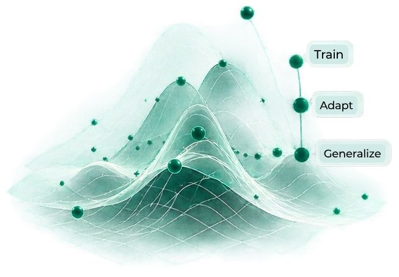
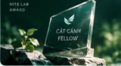
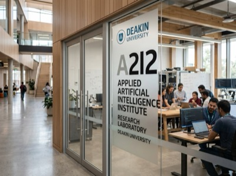
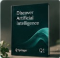
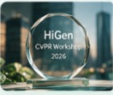
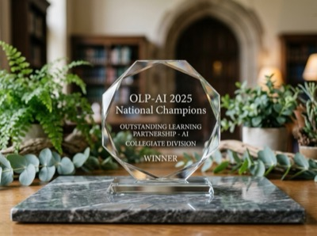

01
Generative & LLMs
Generative models for text, image, and multimodal data. Training, adaptation, and evaluation of large language models.
Learn more
NITS LAB PTIT
PTIT NITS, the Nurturing IT Student Talent Lab, was established to build a modern, focused environment for learning, research, and creativity for Information Technology students at the Posts and Telecommunications Institute of Technology.
Generative models for text, image, and multimodal data. Training, adaptation, and evaluation of large language models.
Learn more
Natural language processing for Vietnamese and low-resource languages. Benchmarks, datasets, and evaluation methods for multilingual capabilities.
Learn more
Reasoning over images, videos, and multimodal questions. Large vision-language models for contextual understanding and background knowledge.
Learn more
Robust representation learning under domain shifts. Methods that help models generalize well in new environments.
Learn more
Discover Artificial Intelligence, 2026.
International Conference on Language Resources and Evaluation, 2026.
International Conference on Autonomous Agents and Multiagent Systems, 2025.
03 / Lab leadership
Lab HeadDr. Dang Hoang Long is Head of the Department of Computer Science at the Posts and Telecommunications Institute of Technology (PTIT) and leads NITS Lab. He graduated as valedictorian in Information Technology at PTIT in 2019. In 2020, he received the Deakin University Postgraduate Research Scholarship (DUPRS) and began his PhD at the Applied Artificial Intelligence Institute (A2I2), Deakin University, Australia. He completed his PhD in early 2024 and is currently teaching and working at PTIT.
His research focuses on Vision and Language Reasoning, Large Language Models, Large Vision-Language Models, and generalization across data domains.
A chronicle of premier research breakthroughs, international distinctions, and prestigious academic fellowships earned by NITS Lab researchers.

Congratulations to student La Quang Hai for earning the prestigious Tier 3 - Cat Canh Fellow fellowship, with a total endowment of up to US$3,000 to accelerate advanced artificial intelligence research at the laboratory.
Student Nguyen Minh Toan won First Prize at the Huawei ICT Competition 2025–2026 Global Final.

RESEARCH MOBILITYCongratulations to student researchers Nguyen Thanh An, Le Xuan Dung, La Quang Hai, and Nguyen Khac Gia Hoang for joining the academic exchange at A2I2, Deakin University, Australia.

Paper by Long Hoang Dang, Thao Minh Le, Vuong Le, Tu Minh Phuong, and Truyen Tran accepted for publication.

Research team had work accepted to CVPR Workshop HiGen 2026 at the world's premier computer vision conference.
Nguyen Thi Tu Anh and team Quillora.AI claimed First Prize in the national "AI and the Library of the Future" competition.

Congratulations to Nguyen Minh Hieu for winning First Prize and Nguyen Khac Gia Hoang for winning Third Prize at National OLP-AI 2025.
05 / NITS RESIDENT
NITS Research Residency connects talented students with research mentors, industry partners, and academic groups to turn academic potential into rigorous research outputs with a clear roadmap and practical impact.
Explore the programme